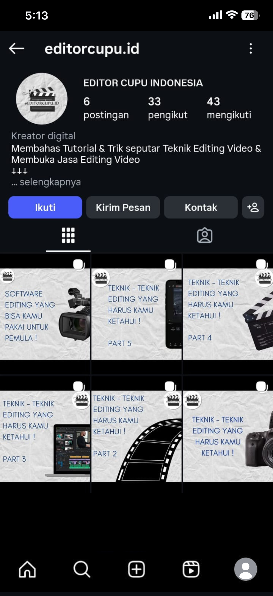
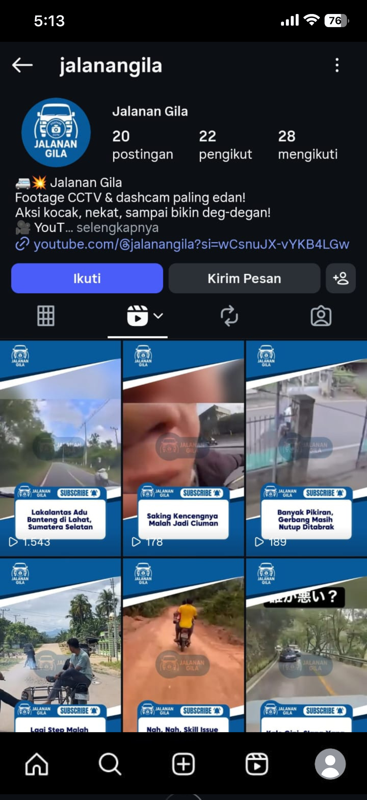
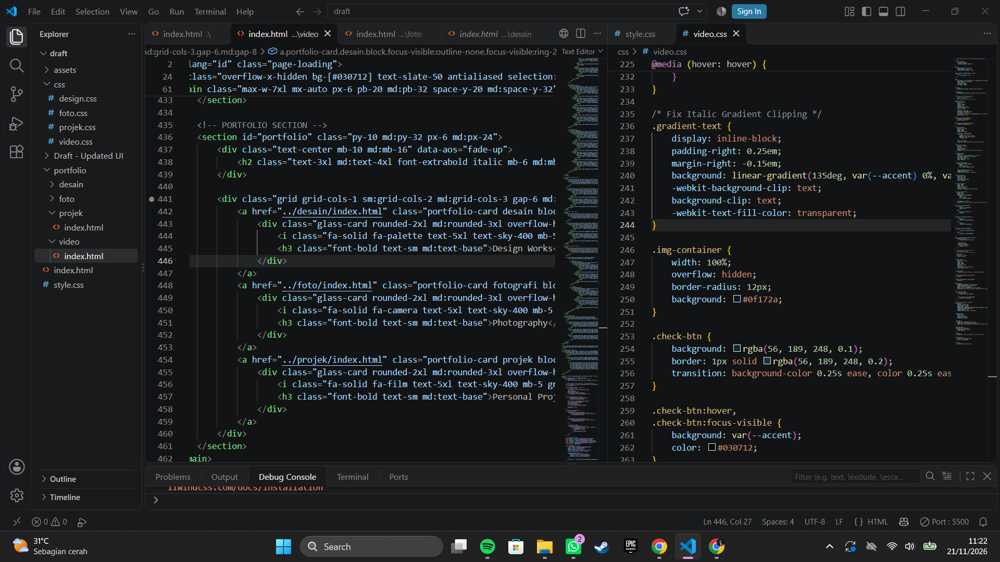
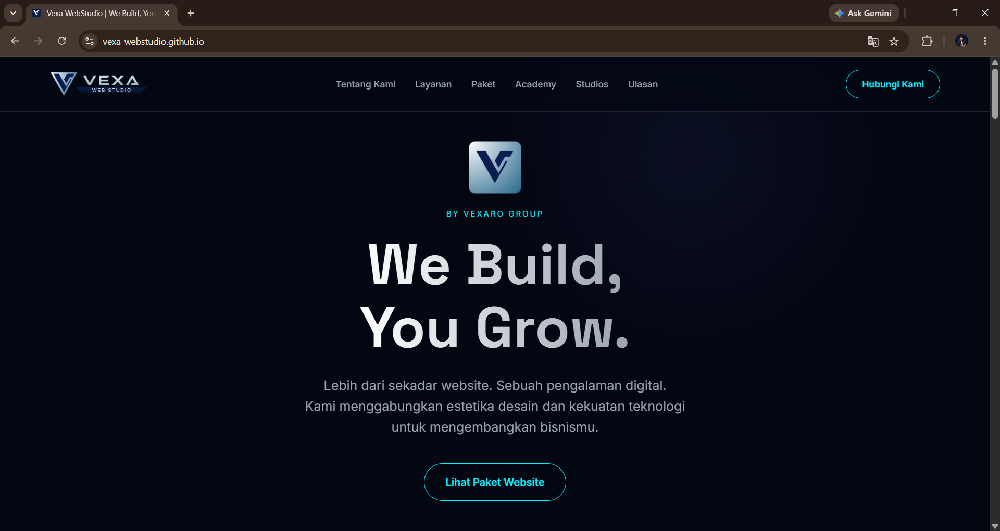

Personal
Project
Independent Creative & Venture Journey


Tap HP untuk switch akun Hover HP untuk switch akun
CONTENT CREATOR PROJECT
"Proyek ini adalah ruang eksperimen kreatif di mana saya berperan penuh sebagai solo creator. Saya mengelola seluruh ekosistem media sosial secara mandiri—mulai dari tahap fundamental seperti pembangunan akun dan riset ide konten, penyusunan script writing, eksekusi desain visual dan video editing, hingga proses optimasi publikasi serta analisis mendalam terhadap insight audiens untuk mencapai performa konten yang maksimal."
2
Accounts Managed
End-to-End
Production Workflow
EDITOR CUPU INDONESIA
"Sebuah platform edukasi yang didedikasikan untuk membagikan pengetahuan seputar dunia kreatif. Konten yang disajikan berfokus pada tutorial video editing, tips & trik praktis, serta pembelajaran dasar (basic learning) yang dikemas dalam format video pendek yang dinamis maupun konten edukatif berbasis feed."
JALANAN GILA
"Platform media berita viral yang merangkum berbagai dinamika kejadian di jalan raya. Konten meliputi dokumentasi insiden lalu lintas dari skala ringan hingga berat, kecerobohan pengguna jalan, momen-momen unik yang tertangkap kamera, hingga laporan kondisi infrastruktur publik seperti kemacetan dan banjir."
VEXARO GROUP
Vexaro Group didirikan oleh Mickey Richie pada akhir tahun 2025 sebagai induk perusahaan (holding company) yang bergerak di bidang industri kreatif, solusi digital, dan pengembangan teknologi untuk membantu brand maupun bisnis bertumbuh di era modern.
Saat ini, Vexaro Group menaungi 3 unit anak usaha dalam ekosistemnya—dengan Vexa WebStudio sebagai lini bisnis pertama yang telah aktif beroperasi melayani klien, sementara 2 lini usaha lainnya tengah dipersiapkan untuk peluncuran mendatang:
Vexa WebStudio
Web Design & Development
Vexa FilmStudio
Video Editing & Animation
Vexa EchoStudio
Audio Editing/Maker & Sound Progression
VEXA WEBSTUDIO
By Vexaro Group
Didirikan oleh Vexaro Group pada awal tahun 2026, Vexa WebStudio bergerak di bidang UI/UX Design dan Web Development dengan layanan pembuatan website modern (Starter, Business, Professional, hingga Custom) yang responsif, cepat, dan terintegrasi sistem cloud, serta kelas edukasi UI Design & Web Creation.
Dalam kurun waktu kurang dari satu tahun terakhir, Vexa WebStudio telah dipercaya menangani lebih dari 5 proyek website, di antaranya:
- Wikara Caffe & Resto — Multi-page Restaurant & Menu Web
- Kenran Logistic Solution / KAG Logistic — Corporate Logistics Web
- GEIS (Khusus Mitra) — Partner Portal & Information System


Tap laptop untuk switch layar Hover laptop untuk switch layar